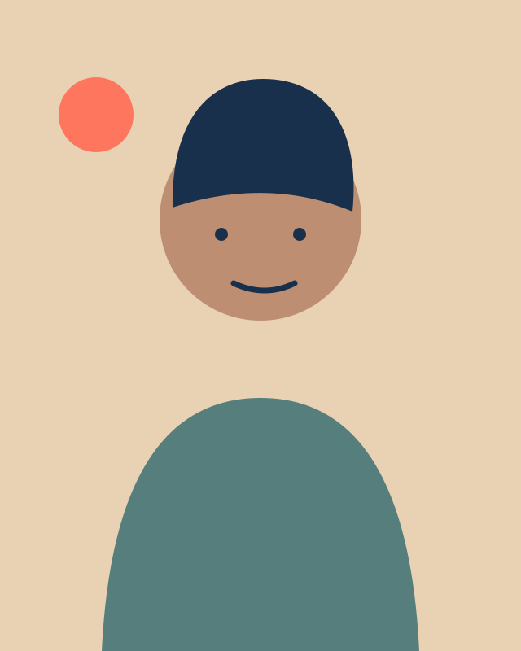
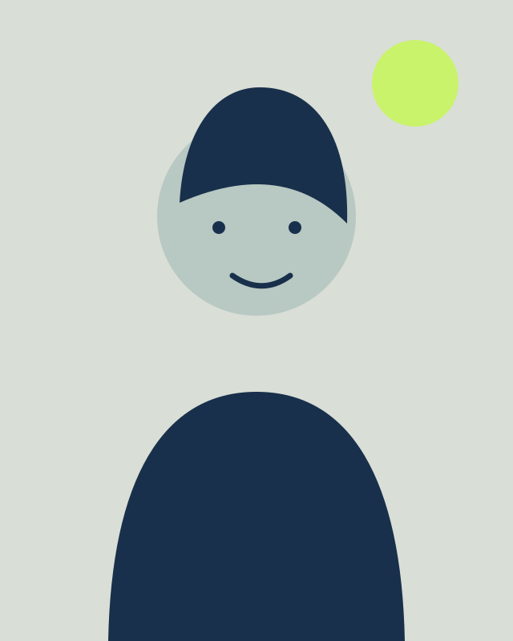

01
Cellular conversations
We map how cells exchange information across space and time—and how those conversations change in disease.
Selected workResearch at the edge of the observable
We study how living systems sense, decide, and adapt. By combining quantitative imaging, computation, and careful experiments, we turn complex biological signals into testable ideas.
01 — Research
Biology rarely respects disciplinary boundaries. Our work moves from molecules to cells to tissues, joining measurement and theory to find the organizing principles hidden inside living systems.
01
We map how cells exchange information across space and time—and how those conversations change in disease.
Selected work02
We connect molecular events to tissue-level behavior through experiments, imaging, and interpretable models.
Selected work03
We build open methods that make complex biological data more legible, reproducible, and useful.
Selected work02 — People
Our lab brings together experimentalists, computational scientists, and engineers. We value generous collaboration, rigorous thinking, and the freedom to follow an unexpected result.
PhD Candidate
Alina builds interpretable models of cell-state transitions and open tools that help experimentalists explore complex datasets.
alina.reyes@example.edu
02Postdoctoral Fellow
Jonah combines live-cell imaging and perturbation experiments to understand how signals propagate through developing tissues.
jonah.lee@example.edu
03Principal Investigator
Maya studies how spatial organization shapes cellular decisions. She likes ambitious questions, clear figures, and mentoring researchers toward intellectual independence.
maya.patel@example.edu03 — Selected publications
Representative papers from the lab. Edit them in content/publications.json.
04 — Join us
We welcome scientists who want to work across disciplines and care about how research gets done. Tell us what you are curious about and what you hope to learn.
Start a conversation